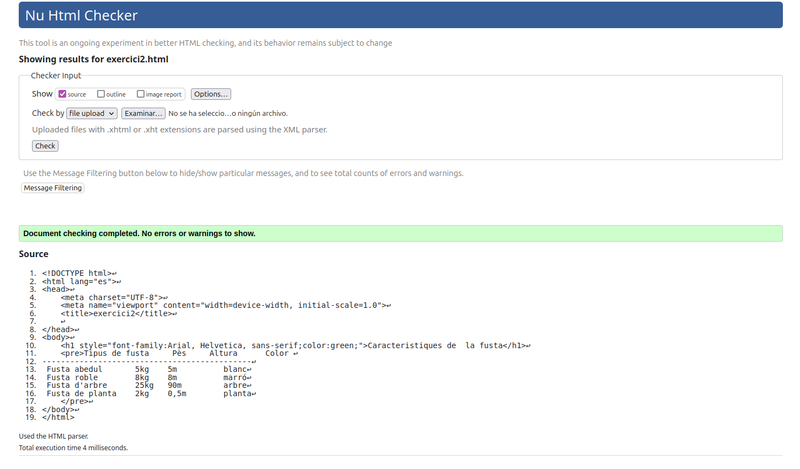

Tipus de fusta Pès Altura Color
---------------------------------------------
Fusta abedul 5kg 5m blanc
Fusta roble 8kg 8m marró
Fusta d'arbre 25kg 90m arbre
Fusta de planta 2kg 0,5m planta

Anar a índex